1
Sokong Visit Malaysia 2026
Jadikan litar pantai sebagai laluan pelancongan yang menggalakkan perjalanan domestik dan lawatan pantai berulang.
Festival Pantai
Konsep festival pantai berskala nasional yang direka untuk menonjolkan kempen destinasi premium: meraikan keindahan, mesra keluarga, beridentiti visual tersendiri, dan berakar dalam budaya pesisir Malaysia.

Laluan setahun merangkumi Semenanjung Malaysia, Sabah, dan Sarawak.
Setiap hentian dirangka sebagai hujung minggu pelancongan, bukan sekadar aktivasi tempatan.
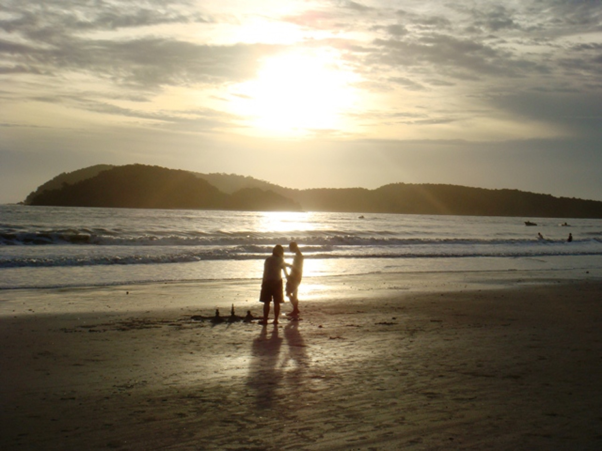
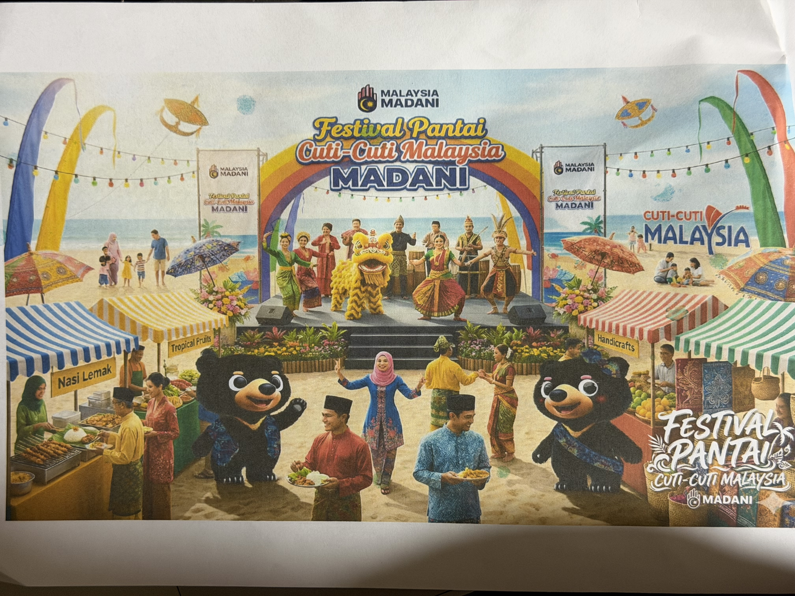
01 Ringkasan Eksekutif
Cadangan ini direka untuk membina selera pelancongan, menyediakan sambutan mesra ala Malaysia, meluaskan kemampuan, dan menjadikan setiap hentian sebagai alasan perjalanan domestik yang kaya dengan kandungan.
Laluan berperingkat sepanjang 2026 yang memastikan kempen kekal aktif sepanjang tahun.
Liputan merentas Semenanjung Malaysia, Sabah, dan Sarawak.
Unjuran pengunjung bagi setiap hentian, dengan keluarga dan pelancongan domestik sebagai teras.
Gabungkan hospitaliti, budaya, membeli-belah, dan perkongsian sosial dalam satu format destinasi.
Jadikan litar pantai sebagai laluan pelancongan yang menggalakkan perjalanan domestik dan lawatan pantai berulang.
Rangka setiap hentian sebagai titik permulaan yang mesra dan sesuai untuk keluarga bagi meneroka budaya pesisir dan keramahtamahan tempatan Malaysia.
Gunakan makanan, kraftangan, persembahan budaya, dan perdagangan komuniti sebagai enjin kandungan cadangan ini.
Gunakan isyarat nilai Rahmah MADANI supaya cadangan ini kekal inklusif, praktikal, dan relevan kepada khalayak luas.
02 Konsep Kreatif
Festival ini harus terasa hangat, meriah, jelas beridentiti Malaysia, dan mempunyai visual tersendiri dari pandangan pertama.
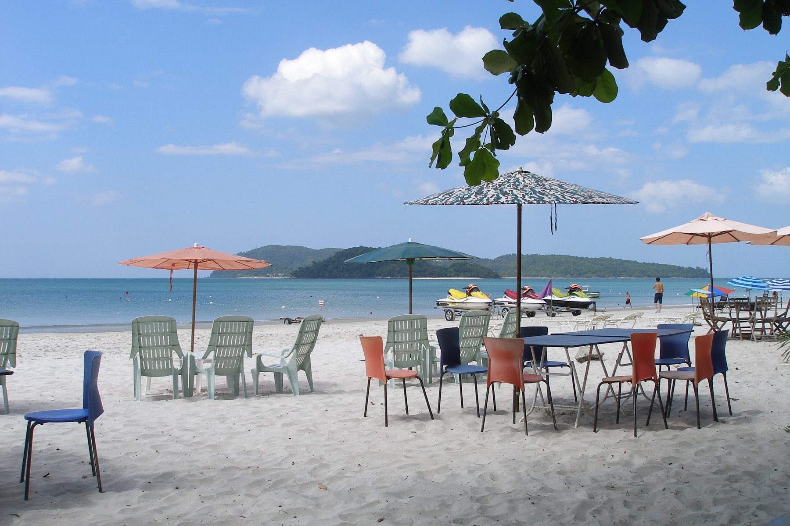
Utamakan pantai, keinginan melancong, dan identiti tempat sebelum butiran operasi.
Gunakan batik, motif kraf, aksen warna hangat, dan unsur keramahtamahan untuk membina identiti tempatan.
Reka pengalaman yang berkembang daripada program siang mesra keluarga kepada detik matahari terbenam dan malam yang fotogenik.
Kekalkan konsep yang premium dalam pembentangan tetapi cukup praktikal untuk peniaga, keluarga, dan pihak berkepentingan sektor awam.
03 Perjalanan Pengunjung
Perjalanan pengunjung ini menghubungkan konsep dan logistik, menjadikan pengalaman festival terasa terancang dari ketibaan hingga pemergian.
Sampai di pantai dan segera memahami di mana aktivasi bermula.
Terima sambutan mesra, detik kemasukan berjenama, dan pusat festival yang jelas.
Bergerak secara semula jadi merentasi zon budaya, makanan, kraftangan, dan perdagangan komuniti.
Sertai persembahan, permainan, sukan, pertandingan, dan program mesra keluarga.
Pulang dengan gambar, belian, kenangan, dan sebab untuk mengesyorkan hentian seterusnya.
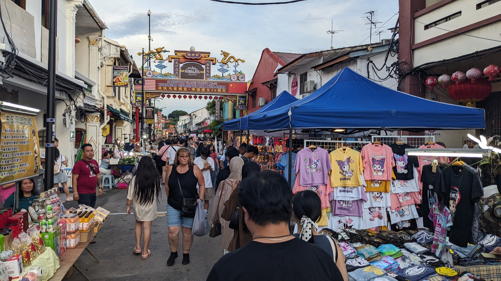
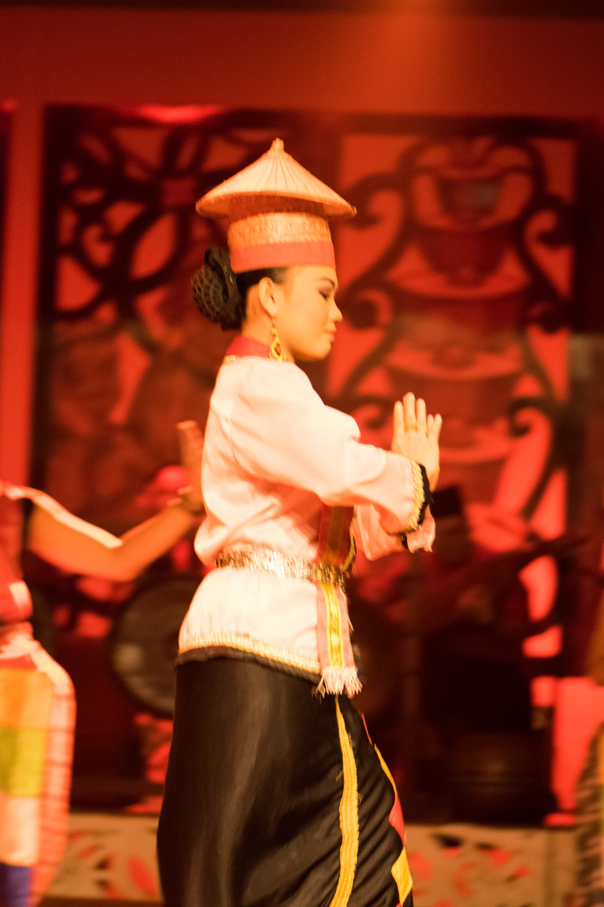
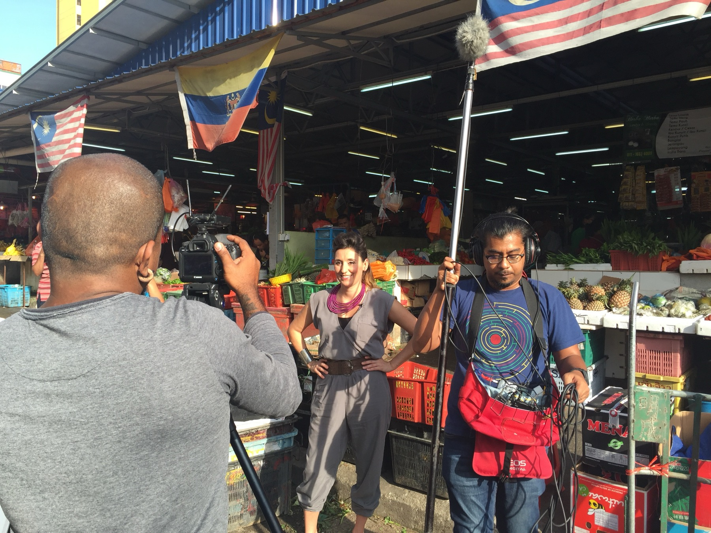
04 Lokasi
Laluan ini merangkumi geografi pelancongan utama di pantai barat, pantai timur, Sabah, dan Sarawak. Ini menjadikan cadangan terasa relevan secara nasional dan bukan terhad kepada serantau sahaja.
Jejak berkala yang menjangkau lembaga pelancongan, majlis tempatan, dan komuniti di seluruh negara.
Port Dickson, Batu Ferringhi, Langkawi, Bagan Datuk, Morib, Klebang.
Pantai Irama, Batu Buruk, Pantai Sepat, dan penutup di Johor iaitu Desaru.
Tanjung Lipat, Tanjung Batu, dan Pantai Damai membawa Sabah dan Sarawak ke dalam naratif utama.
04 Tentatif
Jadual ini harus dibaca sebagai laluan yang terancang, bukan senarai rawak. Susun atur ini menjadikan urutan lebih mudah diimbas dan lebih mudah dipitchkan.
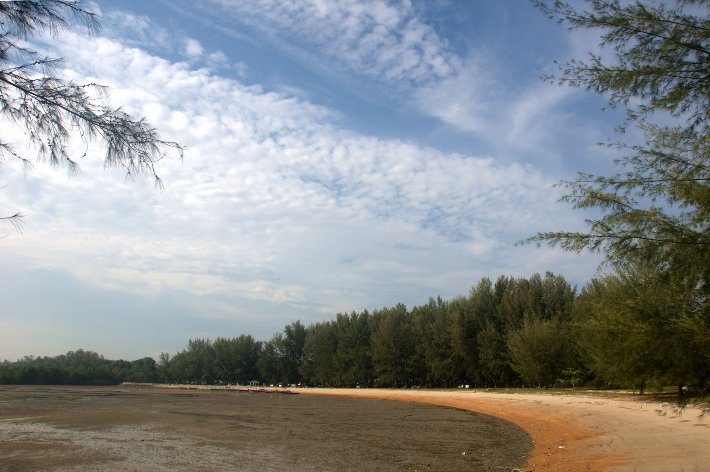
05 Susun Atur
Tempat acara memerlukan pusat graviti yang jelas, aliran pengunjung yang lebih baik, dan bahasa reka bentuk yang cukup untuk difotografi dengan baik sepanjang siang dan malam.
Penambat untuk persembahan budaya, persembahan muzik, dan tontonan petang.
Ruang hospitaliti berjenama untuk maklumat, protokol, penaja, dan tetamu rasmi.
Zon khusus untuk penjual kraf, peniaga kecil, dan pihak berkepentingan pelancongan.
Ruang penjual 10' x 10' yang teratur mengelakkan kecelaruan visual dan menambah baik pergerakan orang ramai.
Gerbang foto, huruf berjenama, dan hiasan bermotif batik yang menghasilkan kandungan sosial secara semula jadi.
Meja berkelah, tempat rehat berteduh, dan sudut yang lebih lembut untuk ibu bapa bersama anak-anak.
05 Teknikal
Pelan operasi menunjukkan bahawa pengalaman ini bukan sahaja menarik, tetapi disokong dengan baik di lapangan.
Pavilion berjenama dengan kaunter maklumat, rawatan fasad, dan ruang tamu modular bersebelahan untuk protokol, penaja, dan interaksi media.
Fasad seragam dan perancangan zon mengelakkan cadangan daripada kelihatan berselerak secara visual sambil memberi kehadiran yang mencukupi kepada penjual tempatan.
Kuasa, sanitasi, tong RORO, tong sampah 120L, dan pemilihan perabot praktikal dibina dalam model operasi dari awal lagi.
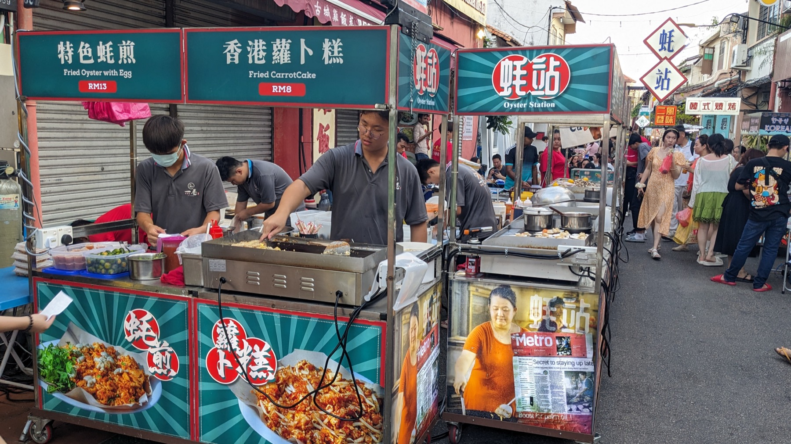
06 Program
Program komersial harus menggabungkan rasa tempatan, kemampuan, dan keserasian penaja. Di sinilah cadangan mula terasa berguna untuk kedua-dua komuniti dan rakan jenama.
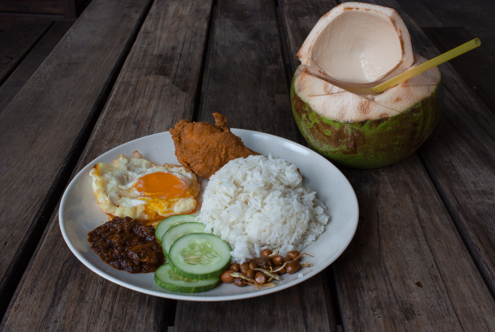
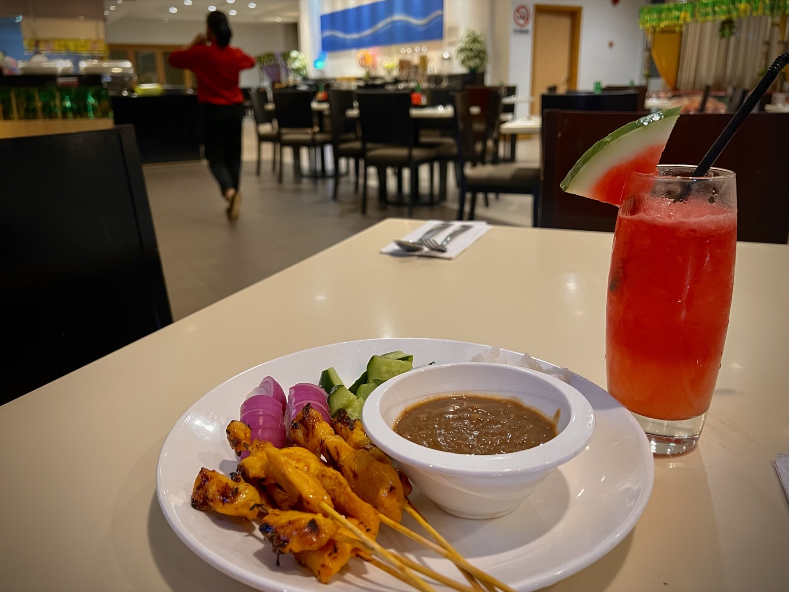
Setiap hentian festival mengetengahkan budaya makanan Malaysia yang dikenali dengan susunan penjual yang direka untuk keselesaan, kebersihan, dan daya tarikan visual.
Kawasan berjenama khusus boleh menampilkan produk bersubsidi atau bernilai daripada rakan kongsi seperti MYDIN, Gardenia, Farm Fresh, dan jenama yang turut serta.
06 Program
Hiburan adalah salah satu pemacu emosi terkuat dalam cadangan ini, jadi barisan artis dipersembahkan sebagai program yang jelas dan menghadap penonton.
Raikan identiti pelbagai budaya Malaysia dengan persembahan pentas utama yang dikurasi merentas kalendar festival.
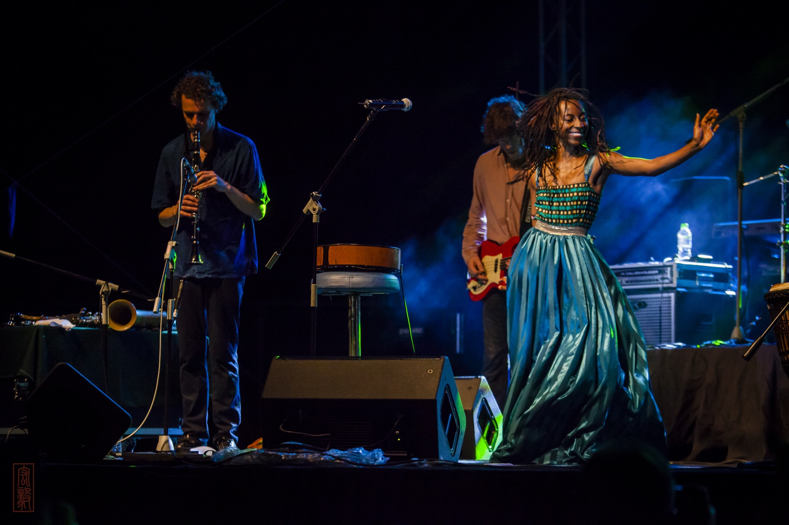
Cipta peralihan waktu emas ke malam yang lebih kuat dengan detik persembahan yang membuat orang kekal, merakam, dan mengedar dalam talian.
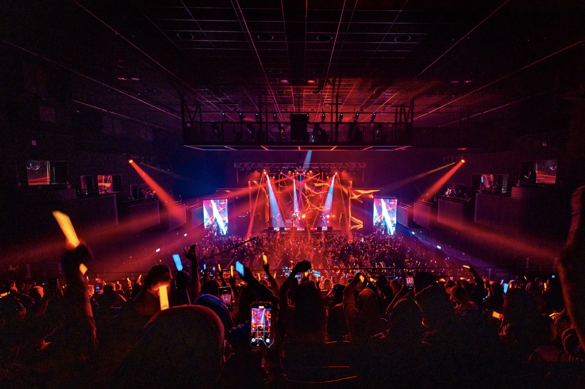
Persembahan langsung yang lebih kecil mengaktifkan zon peredaran dan memastikan tepi pantai kekal meriah di luar jadual pentas utama.
06 Program
Program ini meluaskan khalayak melampaui penonton pasif dan membantu setiap festival terasa aktif dari pagi hingga malam.
Format pelancongan aktif yang praktikal untuk membuka hari awal dan memberi keluarga kemasukan yang lebih lembut ke dalam program festival.
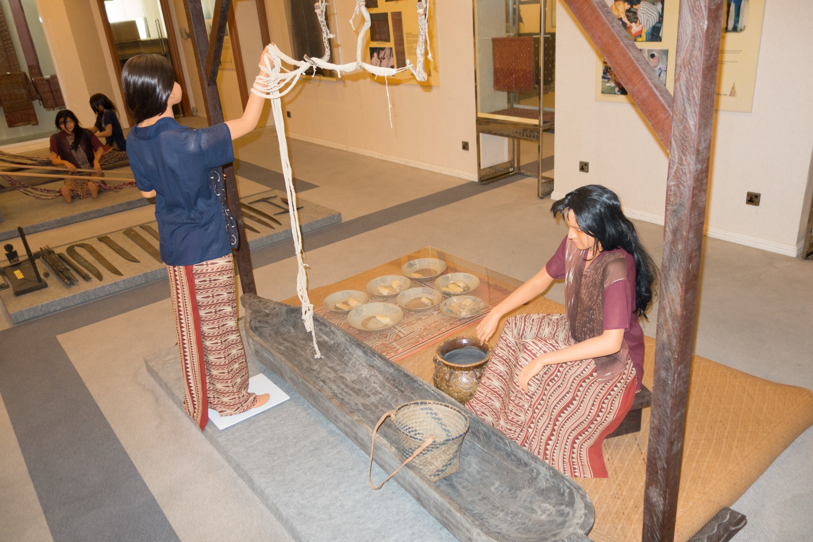
Lukisan batik, tenunan songket, ukiran kayu, dan sesi pembuatan langsung mencipta legitimasi budaya yang lebih mendalam.
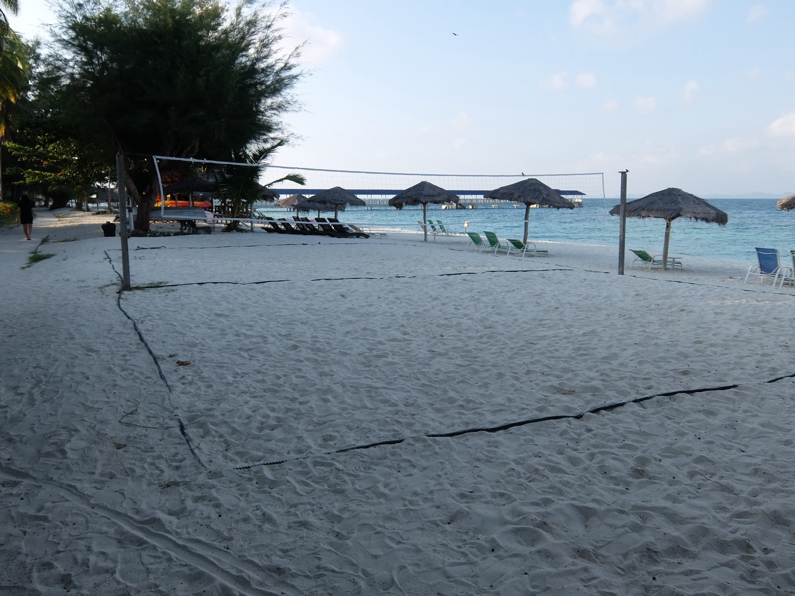
Tarik tali, lari dalam guni, bola tampar pantai, bola sepak, dan format lari berganti-ganti membawa penyertaan keluarga yang mudah ke setiap hentian.
06 Program
Khalayak keluarga memerlukan lebih daripada satu kawasan permainan generik. Memecahkan tawaran kepada pengalaman yang jelas menjadikan cadangan terasa lebih bertimbang rasa.
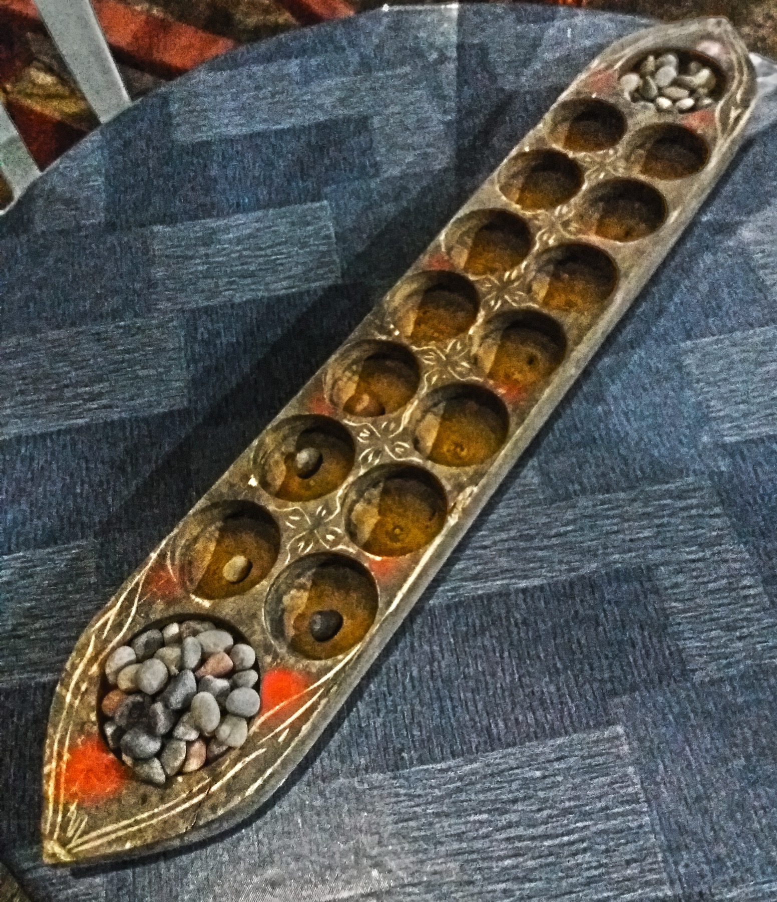
Congkak, gasing, wau, lukisan muka, seni belon, dan pertandingan istana pasir menghubungkan semula keluarga dengan tenaga kampung yang biasa.
Kawasan kanak-kanak yang jelas dan selamat membolehkan ibu bapa menikmati makanan, membeli-belah, dan persembahan dengan kurang halangan.
Tempat duduk lembut, zon keselesaan, dan penjadualan aktiviti siang hari memastikan festival kekal mesra kepada pengunjung pelbagai generasi.
06 Program
Format ini mudah dijenama, mudah difoto, dan mudah disesuaikan dengan tempatan. Ini memberi cadangan fleksibiliti komersial yang lebih baik.
Tukang masak rumah bertanding dengan resipi tradisional menggunakan bahan-bahan yang disokong penaja dan produk dapur daripada jenama isi rumah yang disahkan.
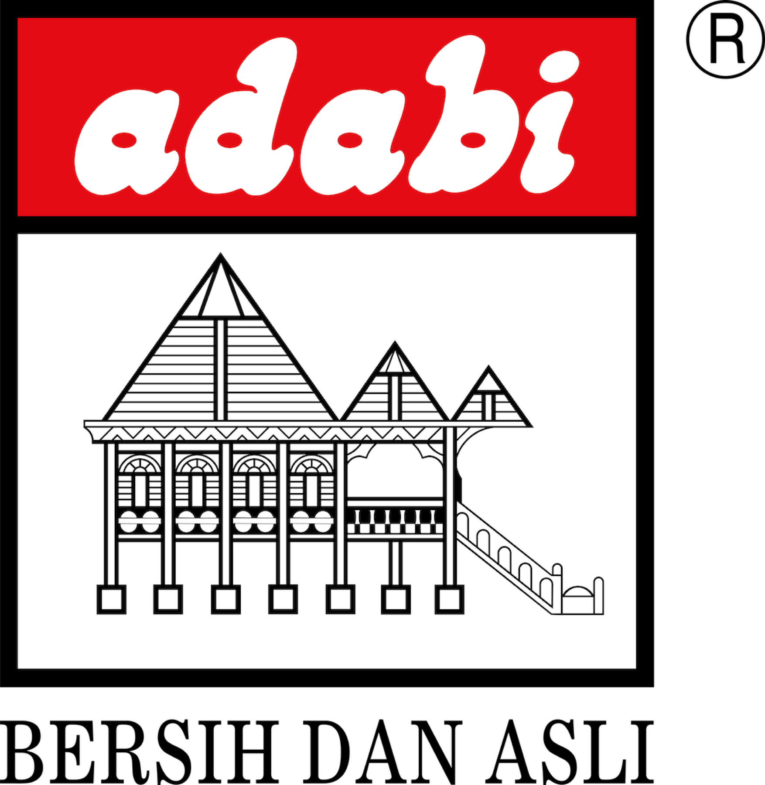
Perayaan bakat kopi tempatan yang menjambatani kebiasaan kopitiam dan budaya kopi kontemporari.
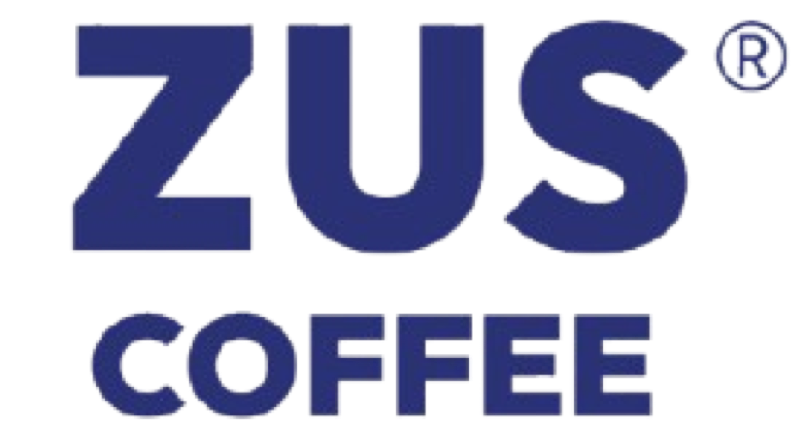
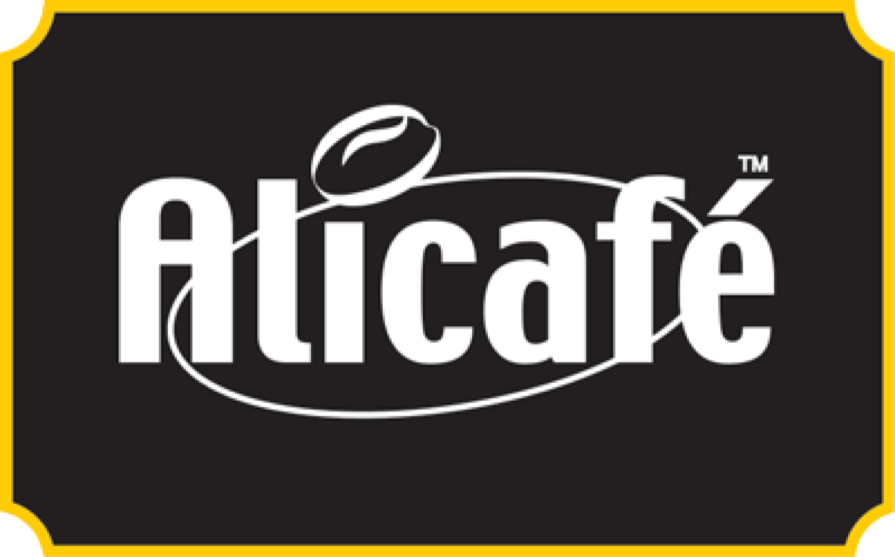
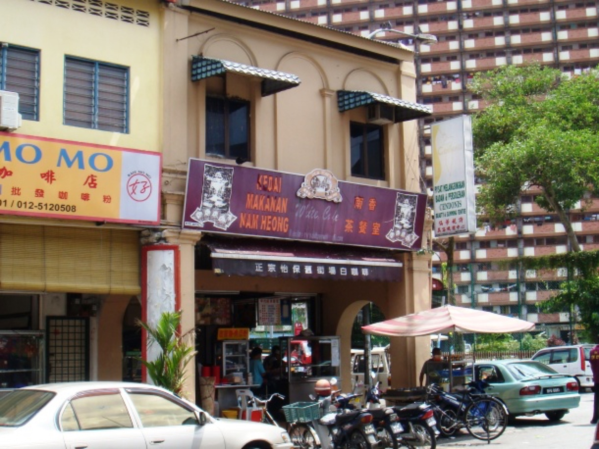
Sesuai untuk jenama seperti ZUS Coffee, Alicafe, dan OldTown White Coffee untuk mencipta zon rehat dengan masa diam yang tinggi.
06 Program
Dua peringkat artis persembahan bergilir merentas litar 14 lokasi, memberi setiap hentian tarikan hiburan yang tulen.
Penghibur bertaraf nasional yang menjadi penambat slot pentas utama petang, menarik media serantau, dan mendorong tempahan pengunjung semalaman.
Artis jelajah popular yang mengisi slot tengah hari dan awal petang, mengekalkan pentas aktif dan tenaga orang ramai berterusan.
Set busker akustik mengisi zon peredaran dan kawasan tepi pantai, mencipta suasana muzik langsung yang boleh dijelajahi di luar pentas utama.
06 Program
Program spektakel petang dan aktiviti siang melengkapkan jadual harian dan meluaskan campuran khalayak.
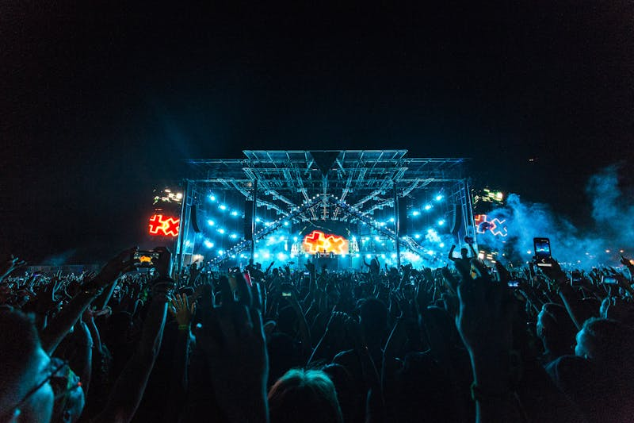
Fakhrul Illusionz, Ejik The Magic, Zaini Bayang, dan SP Dance mencipta hiburan tepi pantai senja-ke-malam yang tidak dapat dilupakan.
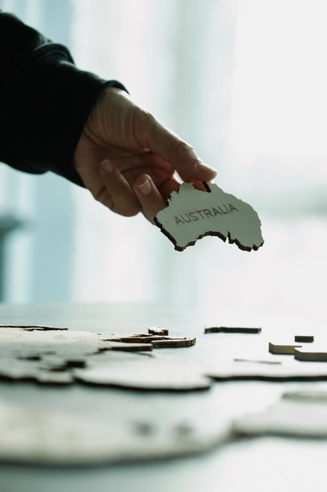
Sesi Zumba terbuka membawa tenaga, menggalakkan gaya hidup sihat, dan mencipta suasana meriah dari pagi ke petang di setiap hentian.
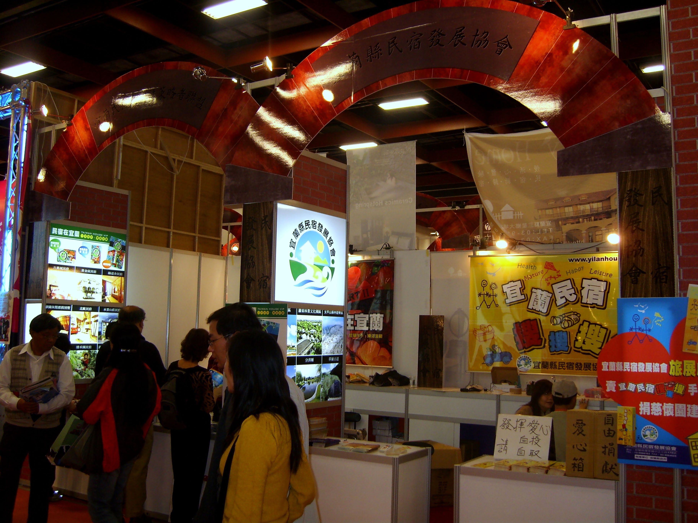
Hotel, resort, dan tarikan menawarkan tawaran perjalanan di tapak, menggalakkan pengunjung merancang lawatan semula dan meningkatkan pendapatan pelancongan tempatan.
07 Penjenamaan & Hiasan
Setiap titik foto, bendera, dan kanopi mengukuhkan jenama Visit Malaysia 2026 sambil mencipta kandungan media sosial secara organik.
Instalasi menarik perhatian diletakkan di titik kemasukan dan tepi pantai untuk potensi swafoto dan perkongsian sosial yang maksimum.
Bendera pantai VM2026 menghiasi perimeter festival. Kanopi bermotif batik meneduhkan kawasan penjual sambil mengukuhkan identiti visual Malaysia.
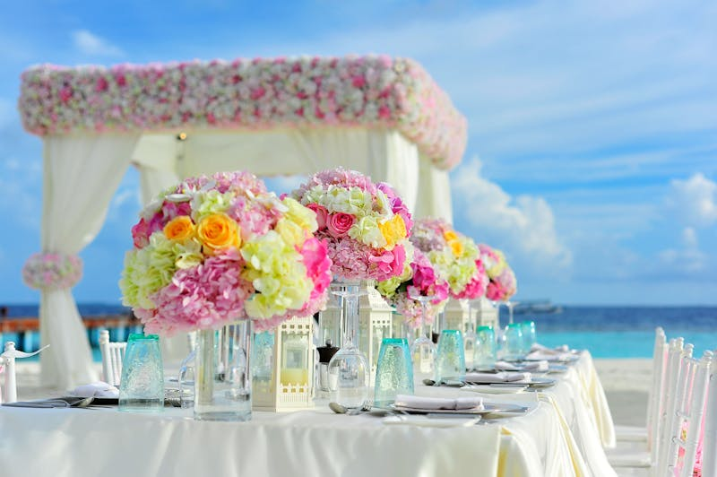
Sepanduk banting perayaan dan deretan lampu ping-pong menerangi seluruh kawasan festival. Pelbagai gaya meja berkelah untuk keluarga berehat, makan, dan bersantai bersama.
08 Promosi
Unit siaran luar Radio RTM negeri menyediakan liputan masa nyata dan promosi di udara, menjangkau jutaan pendengar di seluruh negara dan membina kesedaran menjelang setiap hentian festival.
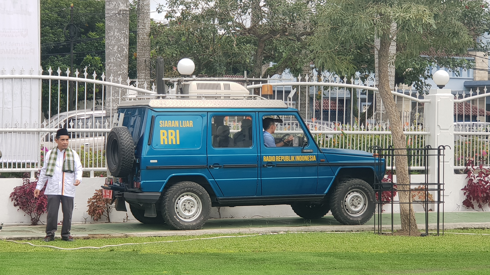
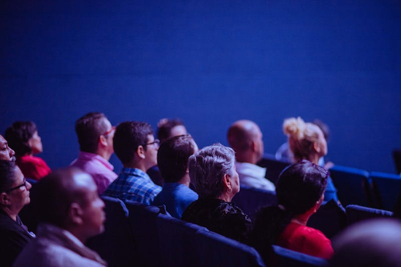
08 Promosi
Dorongan pelbagai saluran memastikan setiap hentian menjangkau penduduk tempatan dan bakal pengunjung melalui titik sentuh fizikal dan digital.
09 Rakan Kongsi
Festival ini disokong oleh tiga kementerian persekutuan dan kesemua 13 lembaga pelancongan negeri, memastikan penyelarasan seluruh negara dan sokongan rasmi.
07 Nilai Tambah
Sentuhan tambahan ini menjadikan festival lebih berkesan, lebih fotogenik, dan lebih mudah diamplifikasi merentas saluran pelancongan.
Jelajah temui-dan-sapa, penampilan pentas, dan peluang foto keluarga.
Papan tanda huruf VM2026, palma neon, gerbang selamat datang, dinding batik, dan latar tema.
Kanopi, banting, susunan berkelah, dan hiasan festival yang terasa jelas Malaysia.
Maskot harus diperkenalkan sebagai hos jelajah, magnet foto keluarga, dan penanda di sisi pentas, bukan sekadar seni klip generik.
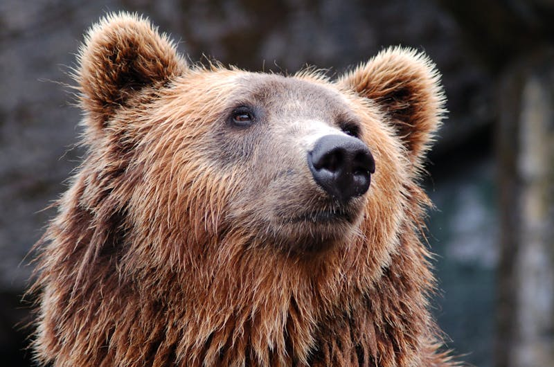
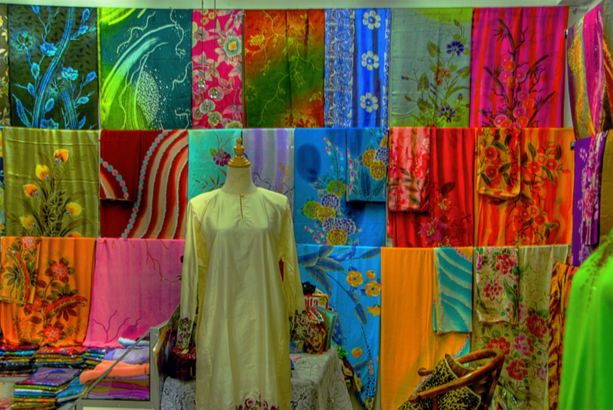
08 Komunikasi
Promosi distruktur sebagai sistem pelbagai saluran merangkumi radio, luar, digital, dan kandungan peneraju pencipta.
Aktivasi radio langsung di setiap hentian mencipta kebiasaan, legitimasi, dan capaian nasional yang luas.
Hiasan tempat, penempatan kawasan sekitar, dan keterlihatan laluan mengekalkan kesedaran yang kukuh di lapangan.
Facebook, X, TikTok, YouTube, dan kandungan langsung menyokong jangkaan dan amplifikasi masa nyata.
Pencipta kandungan perjalanan, makanan, dan gaya hidup membantu setiap hentian menghasilkan bukti sosial yang segar dan relevan secara tempatan.
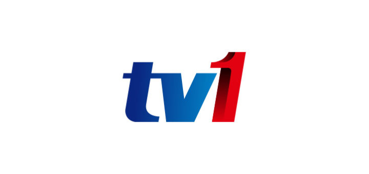
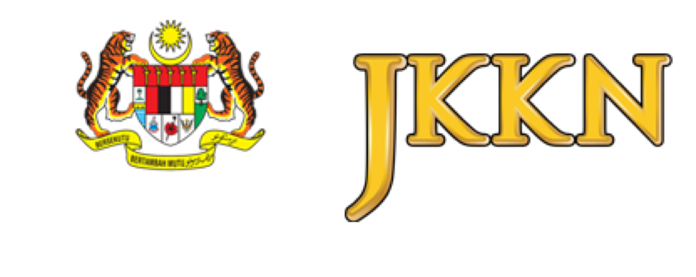
09 Penyampaian
Bahagian ini mengenal pasti agensi, lembaga pelancongan, dan pihak berkepentingan keselamatan yang perlu disejajarkan untuk penyampaian yang lancar.
10 Rakan Strategik
Tanda rakan korporat dan media ditunjukkan secara langsung supaya keserasian komersial mudah dinilai sepintas lalu.
Hanya tanda rasmi milik jenama yang disahkan.
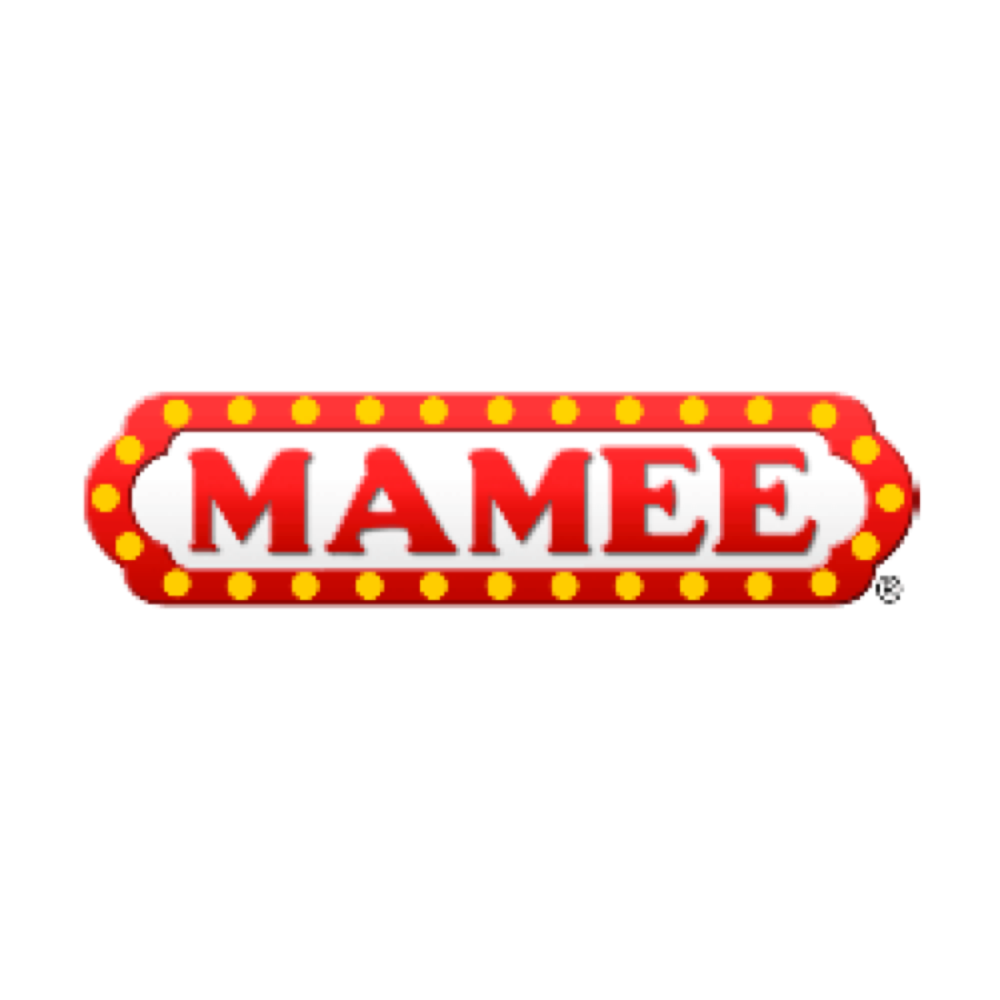
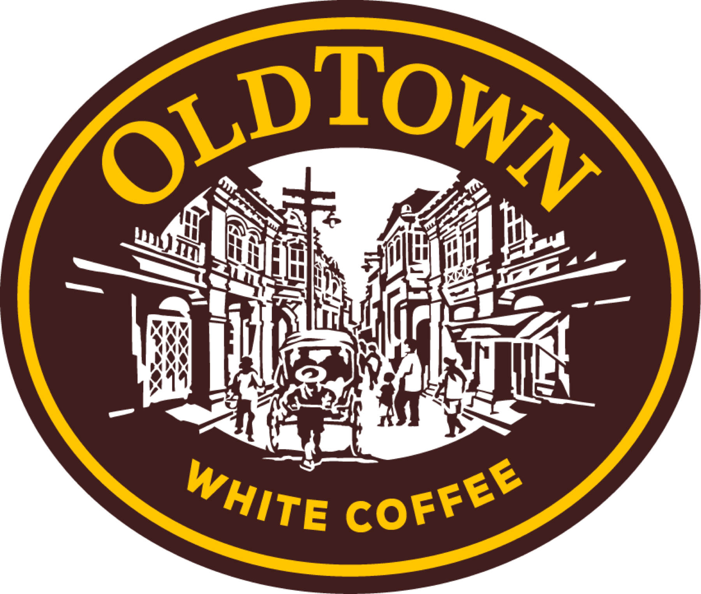
Senarai pendek ini memfokuskan jenama yang kategorinya sejajar secara semula jadi dengan makanan, keluarga, hospitaliti, dan keterlihatan kempen nasional.
Festival Pantai Cuti-Cuti Malaysia MADANI 2026 menghimpunkan daya tarikan destinasi, program keluarga, budaya tempatan, dan aktivasi mesra penaja dalam satu platform pelancongan pesisir berskala nasional.